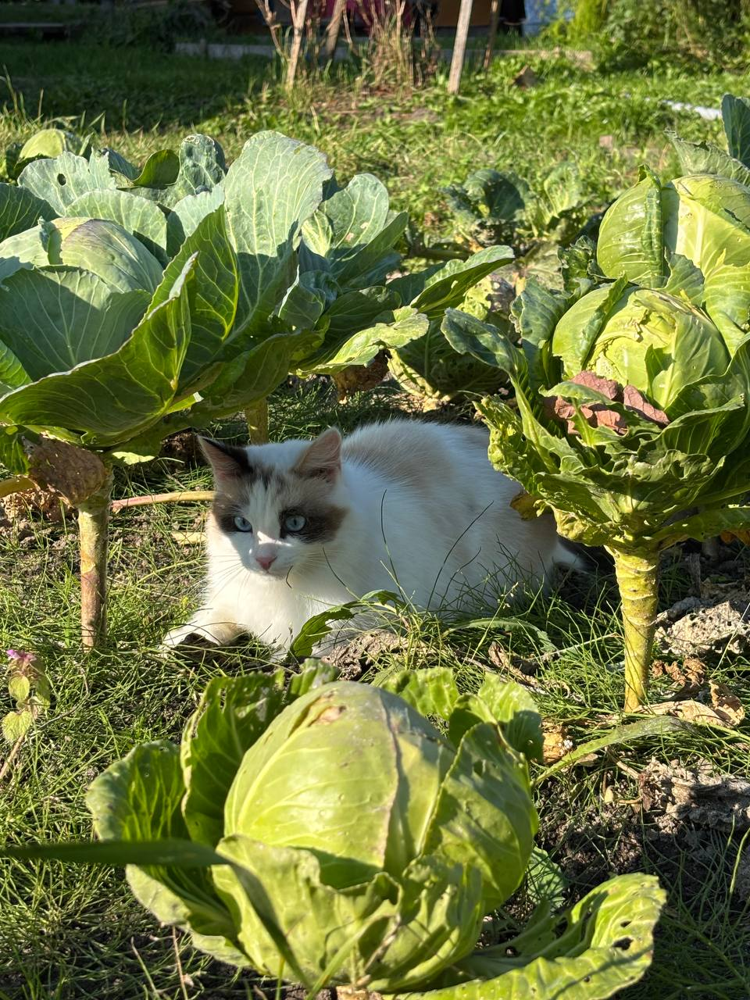

Популярные породы
- Британская короткошёрстная
- Мейн-кун
- Сиамская кошка
Особенности кошек
-
Внешность
- Длина шерсти
- Цвет глаз
-
Характер
- Активность
- Общительность
К разделу 1 | К разделу 2 | К началу
Фотография кошки
Нажми на изображение, чтобы открыть большую фотографию.
